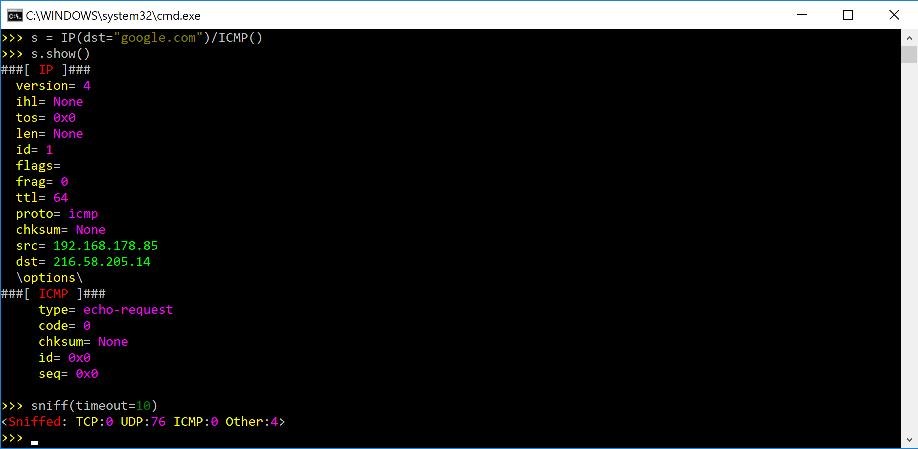
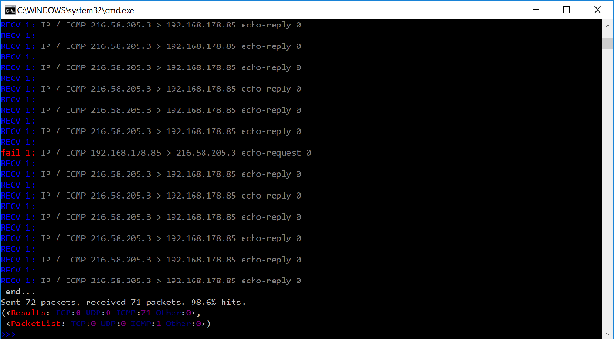

Download and Installation
Overview
Install Python 3.7+.
(Optional): Install additional software for special features.
Run Scapy with root privileges.
Each of these steps can be done in a different way depending on your platform and on the version of Scapy you want to use. Follow the platform-specific instructions for more detail.
Scapy versions
Note
Scapy 2.5.0 was the last version to support Python 2.7 !
Scapy version |
2.3.3 |
2.5.0 |
>2.5.0 |
|---|---|---|---|
Python 2.2-2.6 |
✅ |
❌ |
❌ |
Python 2.7 |
✅ |
✅ |
❌ |
Python 3.4-3.6 |
❌ |
✅ |
❌ |
Python 3.7-3.11 |
❌ |
✅ |
✅ |
Installing Scapy v2.x
The following steps describe how to install (or update) Scapy itself. Dependent on your platform, some additional libraries might have to be installed to make it actually work. So please also have a look at the platform specific chapters on how to install those requirements.
Note
The following steps apply to Unix-like operating systems (Linux, BSD, Mac OS X). For Windows, see the special chapter below.
Make sure you have Python installed before you go on.
Latest release
Note
To get the latest versions, with bugfixes and new features, but maybe not as stable, see the development version.
Use pip:
$ pip install scapy
Current development version
If you always want the latest version of Scapy with all new the features and bugfixes (but slightly less stable), you can install Scapy from its Git repository.
Note
If you don’t want to clone Scapy, you can install the development version in one line using:
$ pip install https://github.com/secdev/scapy/archive/refs/heads/master.zip
Check out a clone of Scapy’s repository with git:
$ git clone https://github.com/secdev/scapy.git $ cd scapy
Install Scapy using pip:
$ pip install .
If you used Git, you can always update to the latest version afterwards:
$ git pull $ pip install .
Note
You can run scapy without installing it using the run_scapy (unix) or run_scapy.bat (Windows) script.
Optional Dependencies
For some special features, Scapy will need some dependencies to be installed.
Most of those software are installable via pip.
Here are the topics involved and some examples that you can use to try if your installation was successful.
Plotting.
plot()needs Matplotlib.Matplotlib is installable via
pip install matplotlib>>> p=sniff(count=50) >>> p.plot(lambda x:len(x))
2D graphics.
psdump()andpdfdump()need PyX which in turn needs a LaTeX distribution: texlive (Unix) or MikTex (Windows).You can install pyx using
pip install pyx>>> p=IP()/ICMP() >>> p.pdfdump("test.pdf")
Graphs.
conversations()needs Graphviz and ImageMagick.>>> p=rdpcap("myfile.pcap") >>> p.conversations(type="jpg", target="> test.jpg")
Note
GraphvizandImageMagickneed to be installed separately, using your platform-specific package manager.3D graphics.
trace3D()needs VPython-Jupyter.VPython-Jupyter is installable via
pip install vpython>>> a,u=traceroute(["www.python.org", "google.com","slashdot.org"]) >>> a.trace3D()
WEP decryption.
unwep()needs cryptography. Example using a Weplap test file:Cryptography is installable via
pip install cryptography>>> enc=rdpcap("weplab-64bit-AA-managed.pcap") >>> enc.show() >>> enc[0] >>> conf.wepkey="AA\x00\x00\x00" >>> dec=Dot11PacketList(enc).toEthernet() >>> dec.show() >>> dec[0]
PKI operations and TLS decryption. cryptography is also needed.
Fingerprinting.
nmap_fp()needs Nmap. You need an old version (before v4.23) that still supports first generation fingerprinting.>>> load_module("nmap") >>> nmap_fp("192.168.0.1") Begin emission: Finished to send 8 packets. Received 19 packets, got 4 answers, remaining 4 packets (0.88749999999999996, ['Draytek Vigor 2000 ISDN router'])
VOIP.
voip_play()needs SoX.
Platform-specific instructions
As a general rule, you can toggle the libpcap integration on or off at any time, using:
from scapy.config import conf
conf.use_pcap = True
Linux native
Scapy can run natively on Linux, without libpcap.
Install Python 3.7+.
Install libpcap. (By default it will only be used to compile BPF filters)
Make sure your kernel has Packet sockets selected (
CONFIG_PACKET)If your kernel is < 2.6, make sure that Socket filtering is selected
CONFIG_FILTER)
Debian/Ubuntu/Fedora
Make sure libpcap is installed:
Debian/Ubuntu:
$ sudo apt-get install libpcap-dev
Fedora:
$ yum install libpcap-devel
Then install Scapy via pip or apt (bundled under python3-scapy)
All dependencies may be installed either via the platform-specific installer, or via PyPI. See Optional Dependencies for more information.
Mac OS X
On Mac OS X, Scapy DOES work natively since the recent versions. However, you may want to make Scapy use libpcap. You can choose to install it using either Homebrew or MacPorts. They both work fine, yet Homebrew is used to run unit tests with Travis CI.
Note
Libpcap might already be installed on your platform (for instance, if you have tcpdump). This is the case of OSX
Install using Homebrew
Update Homebrew:
$ brew update
Install libpcap:
$ brew install libpcap
Enable it In Scapy:
conf.use_pcap = True
Install using MacPorts
Update MacPorts:
$ sudo port -d selfupdate
Install libpcap:
$ sudo port install libpcap
Enable it In Scapy:
conf.use_pcap = True
OpenBSD
In a similar manner, to install Scapy on OpenBSD 5.9+, you may want to install libpcap, if you do not want to use the native extension:
$ doas pkg_add libpcap
Then install Scapy via pip or pkg_add (bundled under python-scapy)
All dependencies may be installed either via the platform-specific installer, or via PyPI. See Optional Dependencies for more information.
SunOS / Solaris
Solaris / SunOS requires libpcap (installed by default) to work.
Note
In fact, Solaris doesn’t support AF_PACKET, which Scapy uses on Linux, but rather uses its own system DLPI. See this page. We prefer using the very universal libpcap that spending time implementing support for DLPI.
Windows
You need to install Npcap in order to install Scapy on Windows (should also work with Winpcap, but unsupported nowadays):
Download link: Npcap: the latest version
- During installation:
we advise to turn off the
Winpcap compatibility modeif you want to use your wifi card in monitor mode (if supported), make sure you enable the
802.11option
Once that is done, you can continue with Scapy’s installation.
You should then be able to open a cmd.exe and just call scapy. If not, you probably haven’t enabled the “Add Python to PATH” option when installing Python. You can follow the instructions over here to change that (or add it manually).
Screenshots
{kind=link}

{kind=link}

Build the documentation offline
The Scapy project’s documentation is written using reStructuredText (files *.rst) and can be built using the Sphinx python library. The official online version is available on readthedocs.
HTML version
The instructions to build the HTML version are:
(activate a virtualenv)
pip install sphinx
cd doc/scapy
make html
You can now open the resulting HTML file _build/html/index.html in your favorite web browser.
To use the ReadTheDocs’ template, you will have to install the corresponding theme with:
pip install sphinx_rtd_theme
UML diagram
Using pyreverse you can build a UML representation of the Scapy source code’s object hierarchy. Here is an
example of how to build the inheritance graph for the Fields objects :
(activate a virtualenv)
pip install pylint
cd scapy/
pyreverse -o png -p fields scapy/fields.py
This will generate a classes_fields.png picture containing the inheritance hierarchy. Note that you can provide as many
modules or packages as you want, but the result will quickly get unreadable.
To see the dependencies between the DHCP layer and the ansmachine module, you can run:
pyreverse -o png -p dhcp_ans scapy/ansmachine.py scapy/layers/dhcp.py scapy/packet.py
In this case, Pyreverse will also generate a packages_dhcp_ans.png showing the link between the different python modules provided.